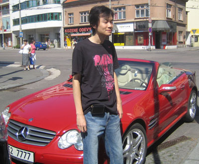

QT第三轮
#1 QT第三轮作者：nara 发表时间：2009-8-4 16:10:13
QT第三轮，不是于下午2点开始了吗？已经过了2个小时了，不知道各位老师有没有什么消息？
对阵情况是怎么样的？有没有已经结束的？比分如何？可以发到这个帖子中交流！
#2 Re:QT第三轮作者：无尽 发表时间：2009-8-4 16:37:12
只看到已结束对局
卢炜元 和 林挺伟
Fitzermann 胜 Warner
冈部 胜 小野
石谷 胜 Andersson
#3 Re:QT第三轮作者：土豆 发表时间：2009-8-4 16:51:40
胡夕对Maciej Nowakowski（波兰），也是曹冬首轮那个对手
曹冬对贺茂雪
殷立成对尤利亚
姚金蕊和了捷克的莫妮卡美女
#4 Re:QT第三轮作者：土豆 发表时间：2009-8-4 16:53:48
中国其余三盘还在进行中#5 Re:QT第三轮作者：土豆 发表时间：2009-8-4 16:58:23
曹冬对贺茂雪。贺开的松月，曹执白走了马步四(恰好是昨天贺执白杀掉尤利亚的那个4）
殷立成胜了尤利亚
#6 Re:QT第三轮作者：潇洒 发表时间：2009-8-4 17:01:31
尤莉亚终于输给中国人了。。
#7 Re:QT第三轮作者：土豆 发表时间：2009-8-4 17:02:28
由于现在信息不十分通畅，冬瓜可能不知道贺茂雪上轮刚走过这个4.贺必然对这个4了解不浅。两打必胜，三打黑优。冬瓜又要苦战了#8 Re:QT第三轮作者：土豆 发表时间：2009-8-4 17:05:26
殷那盘是蒲月，5打，殷白
=======上图对应的爱五子棋谱代码如下，以便你拆解：========
h8i9i7g9h10
======================================================
#9 Re:QT第三轮作者：土豆 发表时间：2009-8-4 17:06:19
曹冬那盘是贺茂雪开的松月，曹没换。应该是要的三打#10 Re:QT第三轮作者：土豆 发表时间：2009-8-4 17:19:23
曹冬和了贺茂雪
胡夕输了
#11 Re:QT第三轮作者：土豆 发表时间：2009-8-4 17:22:12
一个小时后开始第四轮#12 Re:QT第三轮作者：蛋老师 发表时间：2009-8-4 17:23:17
曹冬加油~~！
#13 Re:QT第三轮作者：雨一直下 发表时间：2009-8-4 17:36:26
曹冬加油加到A组啊，那样可以与中村对局。完成10年来的梦想！加油加油！#14 Re:QT第三轮作者：土豆 发表时间：2009-8-4 17:42:57
尤利亚前三轮输两盘，冲A没戏了。估计大鱼此刻合不拢嘴
#15 Re:QT第三轮作者：魔法少年 发表时间：2009-8-4 17:45:39
大鱼这次总分又能多1分了。
#16 Re:QT第三轮作者：无尽 发表时间：2009-8-4 17:49:46
5分还有理论上的机会吧，看小分，不过比较难。#17 Re:QT第三轮作者：土豆 发表时间：2009-8-4 17:50:57
尤利亚肩膀还纹了个中文繁体的“爱”字，很诱惑，人也比以往瘦了些，更显妩媚。大鱼真要撞上，还真未必扛的住。。。。#18 Re:Re:QT第三轮作者：nara 发表时间：2009-8-4 17:57:33
引用：哈哈，没见过这纹身的照片！土豆老师上PP啊！
原文由 土豆 发表于 2009-8-4 17:50:57 :
尤利亚肩膀还纹了个中文繁体的“爱”字，很诱惑，人也比以往瘦了些，更加妩媚。大鱼真要撞上，还真未必扛的住。。。。
#19 Re:QT第三轮作者：雨一直下 发表时间：2009-8-4 17:58:55
哈哈哈哈哈，，笑死我了，殷老师真有定力哇，佩服一个。 冬瓜殷老师加油冲进A，与大鱼会合。
冬瓜殷老师加油冲进A，与大鱼会合。#20 Re:QT第三轮作者：nara 发表时间：2009-8-4 17:59:52
殷老师表现不错啊，把尤利亚斩落马下！
#21 Re:QT第三轮作者：土豆 发表时间：2009-8-4 18:06:13
老殷早已六根清静了#22 Re:QT第三轮作者：土豆 发表时间：2009-8-4 18:12:10
照片这里有
http://www.rifchina.com/Article/ShowArticle.asp?ArticleID=5467
#23 Re:Re:QT第三轮作者：nara 发表时间：2009-8-4 18:33:41

曹冬这照拍得。。。。。呵呵！
BENZ敞篷跑车啊，这车牌也够牛的！
#24 Re:Re:QT第三轮作者：nara 发表时间：2009-8-4 18:43:19
引用：说明冬瓜多少有点中招的意味
原文由 土豆 发表于 2009-8-4 17:02:28 :
由于现在信息不十分通畅，冬瓜可能不知道贺茂雪上轮刚走过这个4.贺必然对这个4了解不浅。两打必胜，三打黑优。冬瓜又要苦战了
#25 Re:QT第三轮作者：土豆 发表时间：2009-8-4 19:01:25
松月执白苦防是冬瓜的最爱，他是有受虐性人格的，呵呵#26 Re:QT第三轮作者：土豆 发表时间：2009-8-4 19:03:40
谱出来了。冬瓜最终下的是松月2打，前方的信息有误。这个变化白不死，事先推荐过。后面能抓些机会
对局谱见这里http://www.renju.net/media/games.php?gameid=13819
#27 Re:QT第三轮作者：nara 发表时间：2009-8-4 19:22:21
看来外国棋手对于我国高手还是很谨慎的！哈哈！